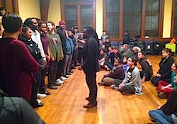

Friends,
This weekend, nationwide rallies are planned to #ReclaimMLK -- to shift the conversation from simply "community service" to "community justice," and to highlight the leadership of youth of color in Ferguson and around the country for racial justice.
We encourage you to join one of the many events, or organize one in your own community.
The launch of FOR's Campus Weekend nonviolence training
Here at FOR's headquarters in Nyack, NY, we will pay tribute to Dr. King's legacy of justice through gathering a multi-faith community of university students and mentors for an intensive program focused on organizing tactics, movement-building, and spiritual discernment.
This weekend is our pilot Campus Weekend program, with undergraduate students and mentors from eight universities in five states assembling for a three-day immersion in the nonviolent strategy.
This weekend includes workshops with:
- Rev. Osagyefo Sekou, FOR Freeman Fellow and organizer in the movement against police brutality and racial profiling in Ferguson, MO.
- Rev. Kristin Stoneking, FOR Executive Director and founder of the Multifaith Living Community at the University of California, Davis.
- Cynthia Williams, outreach committee chair of the Rockland County Coalition to End the New Jim Crow.
- And me, Gretchen Honnold, FOR Training Coordinator and on-the-ground support personnel to FOR's organizing in Ferguson, MO.
- Plus an open mic night featuring a special performance by the Peace Poets.
We are so grateful for your support in launching this effort to cultivate and strengthen the next generation of multi-faith justice and peace leaders!
In the context of the growing movements for nonviolent social change -- exhibited in such current efforts as the #BlackLivesMatter and #ReclaimMLK movements, the movement to end mass incarceration, the immigrant rights movement, the climate justice movement, and the multi-faith solidarity movement -- we see a new generation of leadership taking lessons and claiming ownership.
FOR's Campus Weekend provides an intergenerational and multi-faith framework to strengthen the activism of young activists on a range of pressing social issues. Participants will leave this exciting weekend with a renewed spirit for faith-rooted justice and a community of support, solidarity, and mentorship.
Are you connected to a university and interested in bringing FOR's Campus Weekend program to your part of the country? Just reply to this email and let us know! We are excited about taking this initiative on the road.
As Caleb, a 12-year-old organizer of the #ReclaimMLK march in Chicago said, "We didn't organize this march just to lift our voices. We came to make change."
With deep gratitude for your fellowship and support,
 Gretchen Honnold Gretchen Honnold
Training Coordinator
Fellowship of Reconciliation
Images: Ferguson National Response Network; Rev. Sekou leading a training in Boston; students from Warren Wilson College in North Carolina with FOR National Coordinator Ethan Vesely-Flad in Ferguson earlier this month. |